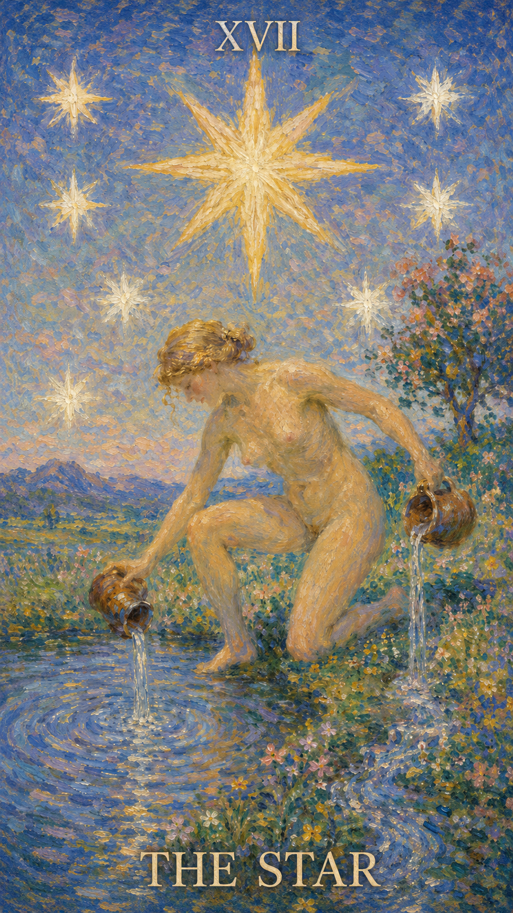

— 貳 · CORRESPONDENCES
对应要素Esoteric Correspondences
- 元素 Element
- 风希望、疗愈、灵感、未来愿景
- 星座 / 行星
- 水瓶座希望、疗愈、灵感、未来愿景
- 生命之树 Tree of Life
- Tzaddi路径与此牌的精神功课相连
- 希伯来字母
- Tzaddi（鱼钩）通过希望理解当前阶段的命运功课，在疗愈中重建对自己与未来的信任


星星是在高塔之后出现的清泉。经历了崩塌，人重新看见希望，也重新相信自己与世界之间还有连接。在夜空中烁烁生辉的八颗星里，最大的一颗据说是天狼星，它为寻求帮助的人带来希望与信心。
← 返回大厅 / 选择其它卡牌星星是在高塔之后出现的清泉。经历了崩塌，人重新看见希望，也重新相信自己与世界之间还有连接。在夜空中烁烁生辉的八颗星里，最大的一颗据说是天狼星，它为寻求帮助的人带来希望与信心。
当这张牌出现，说明你正遇到“希望、疗愈、灵感、未来愿景”的课题。它既可能表现为外部事件，也可能是内心正在成熟的一个阶段。星星牌的关键词是“希望”，但要留意：它的希望与乐观往往并非来自现实，而更多与当事人的心理状态有关——它意味着你正处在一种相信事情会有积极结果的状态里。这种纯粹的愉悦可能源于灵性的觉醒，也可能来自无知或长期压抑后的反弹；正因为如此，星星之美虽然动人，却并不稳固。若之前缺乏扎实的准备，虚幻的乐观终究难以持久。但若你所追寻的本就是感觉、直觉、创意与心灵的东西——比如背包旅行、灵修、艺术创作——那么星星大多会给出美好的论断。
裸身的女子跪在池边，左膝着地，右脚探入水中，正将两壶生命之水倾倒在池中与岸上。她倒出的水源自节制牌中的圣杯，蕴含着地球上所有的生命，象征生命力的流动。不远处的枝头栖息着一只不死鸟，预示生命的不朽。大地代表意识，水代表无意识，不死鸟是精神的升华，而裸女则寓意真实的自我。天空中一大七小八颗星辰交相辉映，七与八的组合象征物质世界与精神世界的完整与平衡。这是一张充满希望的牌，预示寓言的实现、灵感与精神的互动，告诫人们不要放弃希望——唯有自信、自尊、自强，才能有所成就。
通过希望理解当前阶段的命运功课，在疗愈中重建对自己与未来的信任
星星表示人事物的发展正处在初期阶段。正逆位的区别，在于能否平稳度过这个初期：度过了，希望便有机会落地生根；度不过，飘飘然的乐观就会被“现实是残酷的”所打破。因此解读星星时，尤其要参考牌阵中的其他牌，来衡量当事人在现实中的真实处境——若旁边是宝剑、圣杯一类轻盈的牌，眼前的快乐很可能是空中楼阁；若有钱币与权杖相伴，虽较为安稳，事情却也未必如想象中那般美好。

裸身女子在水边倒水，天空中群星闪耀，象征崩塌后的疗愈。
象征希望、灵感与人类的精神追求。
水是情感与直觉的传统象征，倾倒表示思想与情感的流动。
女性的裸露象征脆弱，也表示纯洁与本真。
象征直面并接受与情感世界的联系。
表示与现实世界稳固的连接。
七颗小星与一颗大星代表丰盛与宇宙能量，7 与 8 的组合表示物质世界与精神世界的完整与平衡。
常与乐观、快乐和精神的启迪相关。
象征稳定，以及个人在环境中的成长。
多样的色彩代表情感的多面性与人类经验的广泛性。
象征希望、恢复与治愈。
象征希望、潜力与新的开始。
表明一段困难时期之后的平静与清澈。
代表纯洁的思想与清澈的情感。
红色往往与活力、勇气和激情相关。
代表美、成长，以及自然界中天性的展现。
对应此阶段在人生旅程中的功课。
数字 17 是 1 与 7 的组合，约化为 1+7=8（力量），也指向以柔克刚、以信念安抚动荡的能量。它紧随高塔的崩塌之后，象征废墟之上重新升起的星光。17 指向经验累积后的转折与整合，引导人从事件的表层进入更深的精神功课。
在解读时，星星提醒我们：事件表面的顺逆终会变化，真正值得把握的是牌面所揭示的内在功课。希望本身不是逃避，而是在看清现实之后，依然选择相信前方有光。

正位的星星表示这股能量正在逐渐清晰。它的提示语是：希望的光芒、乐观的心态、高尚的情操、宇宙的引导、真实的自我、无私的奉献、心灵的慰藉、自我治愈、宏观的视野、内在的和谐。顺着牌面主题行动，相信自己的直觉，事情会显露出可被把握的方向。
希望，疗愈，灵感，愿景，平静，祝福，恢复信心，愿望得以实现，充满创造力，萌发灵感，理想主义者，前途光明，期望，信任，信心，目标，恢复，更新，重新开始，复兴，振兴，灵性，明亮，宁静，鼓舞
风 · 希望、疗愈、灵感、未来愿景
感情中，星星代表关系进入与“希望、疗愈、灵感、未来愿景”有关的阶段：碰到理想的恋人、从友人转为恋人、迸发爱的火花，是一种理想化而热情的、寄托着希望的爱。单身者会被怀抱理想、心地澄澈的人吸引；有伴侣者则可以围绕信任、理解、开放的交流与共同的梦想，进行更成熟的沟通。
事业学业上，星星提示你用更高、更开阔的眼光处理问题。它代表独特的创造力、光明的前途与极高的目标，事业蒸蒸日上，学业前景乐观；你对课业充满好奇，常因独特的学习方式而受益。这张牌鼓励你尽情发挥创意，以发散、天马行空的思维去解决难题。
人际关系中，星星象征理想的友情与相辅相成的情谊——你朋友很多，彼此能够互相帮助、互相鼓励。财富方面则有新的财源，可能凭直觉获得意外的收入，运势相当不错，自给有余还能帮助他人。不过要量力而行，有时你付出太多、毫无保留，反而被朋友所拖累。
健康生活上，星星提示身心状态与当前的心理课题相连，是一张充满疗愈意味的牌。它适合调养身心、恢复信心，让长期紧绷的神经在希望中慢慢松弛。可以多接近水边、自然与安静的环境，让心灵重新被滋润。同时也要记得：纯粹的乐观需要现实的照料相配——在憧憬美好的同时，仍要照看作息、饮食与身体的真实信号，以更稳定的方式照顾自己。
适合前往生态环境良好的地区，对文化古迹略感兴趣，偏爱艺术，有望获取专利。若问具体事件，正位多表示事情进入一个充满希望的开端。主动去理解它的意义，会比单纯等待结果更有力量。

逆位的星星表示这股希望的能量受阻、失衡或被错误使用。它的提示语是：失去希望、内心的迷茫、挫败的感觉、自我怀疑、过度的自我牺牲、逃避现实、心灵的疲惫、偏离目标、缺乏方向、内心的冲突。此时最重要的是先看清自己是否正在抗拒这张牌所要求的功课——希望并未真的消失，它只是被失望暂时遮住，需要你换一个角度重新点燃。
失望，信念不足，灵感枯竭，悲观，疗愈延迟，缺乏想象力，幻想幻灭，好高骛远，错失良机，固执己见，理想与现实无法兼顾，缺乏信心，绝望，失去希望，迷失方向，困惑，不安，失落，挫败感
风 · 受阻、延迟、反复与失衡
感情中，逆位的星星常表现为无法与对方心灵相通、对恋情期望过高，或虽有进展却因身心疲惫而最终放弃。也可能是以貌取人、期望落空，两人之间出现难以弥合的隔阂。它提醒你：感情容易出现误解、逃避、冷淡或过度理想化，关系若一直无法推进，需要回到双方真实的需求，并以更务实的眼光去看待彼此。
事业学业上，逆位的星星常表现为创意无穷到头来却一无所获、消息来源有误、得不到同事与上司的信任，或考试受挫、理想脱离现实。它提示你可能有拖延、判断偏差或方向迷失。此时要放开心胸，努力吸收众人的看法，相互比较后选出最好的办法，先修正方向、补足信息，再决定下一步。
人际方面要小心自我意识过高、苛求他人，以致对朋友感到失望、彼此疏远、互不理解。逆位的星星常伴随破财、无法获得预期收益。财富方面适合回到理性评估与长期规划，务实一点，不要被虚无缥缈的幻想牵着走，也不要对未来太过乐观——长期投资还是落袋为安比较稳妥。
健康上，逆位的星星常提示心灵的疲惫、信念的低落与希望的暂时熄灭，情绪容易陷入悲观与自我怀疑的循环。身心的疗愈被延迟，提不起劲、缺乏方向感。建议减少对自己的苛责，不要沉溺于失望之中；从一个新的、微小的角度重新看待问题，调整期望与节奏，给身心一段安静的恢复期，星光自会重新亮起。
适合相对清静的户外场所。事情可能延迟、反复，或暴露出原先被乐观掩盖的隐患。先调整期望、修正模式，再谈结果。

当星星出现在三牌阵中，它提示你从时间维度观察这股能量：过去留下的结构、现在显现的课题，以及未来需要整合的方向。点击下方卡牌揭示隐秘启示。
可能经历了一段困难时期，但星星表明你已从中汲取教训，准备迎接新的希望。
是一个灵感涌动的时期，充满创造力与积极前行的能量，你可能感受到宇宙的支持，开始信任自己的直觉。
预示一个前景光明的未来，其中蕴含实现梦想与目标的强烈可能。